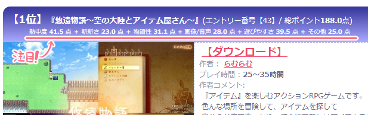
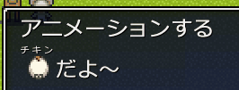
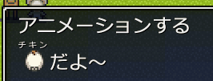

今回は『ウディコン（WOLF RPGエディターコンテスト）』というゲームコンテストを15年やってきて、私が得てきた知見や、ルール変更の歴史について残しておこうと思います！
これからゲームコンテストを開きたい人はぜひ参考にしてください。コンテストの裏側の苦労を知ってみたい人にもぜひどうぞ。たぶん15000文字以上あるので多いですよ！
 ※第13回ウディコンイラストよりウルファール＆夕一
※第13回ウディコンイラストよりウルファール＆夕一
◆ウディコン開催前の話
【自前でウディコンを開催する理由 コンテストパークが終わったから】 最初は、自前でコンテストをやるつもりはありませんでした。
というのも、ツクールシリーズ販売会社さま（当時は株式会社エンターブレイン）による『コンテストパーク』というアマチュアゲームコンテストがあったので、ウディタ利用者のみなさまが目標にしてもらうコンテストもそこに任せればいいや！ と考えていたのです。
私もそれまでに2作品をコンテストパークに投稿しており、「出せる場」と「締め切り」があることがどれほど自分のゲーム開発のモチベーションに良い影響を与えていたかをその身で痛感していました。
コンテストパークがなかったら、『
シルフェイド幻想譚』（RPGツクール2000製）も『
モノリスフィア』（ウディタα版製）も完成させてなかったかもしれません。受賞作品には審査員からのコメントも付いて、これがうれしかったんですよ！
 ↑これはシルフェイド幻想譚のコンテストパーク金賞受賞時のページ（インターネットアーカイブより）
↑これはシルフェイド幻想譚のコンテストパーク金賞受賞時のページ（インターネットアーカイブより） ですが、ウディタを正式リリースした2008年3月から3ヶ月後の、2008年6月。なんと『コンテストパーク』が終了してしまいました！
そう、目指してもらうべきコンテストがポッカリなくなってしまったのです！
私はそれから半年くらい、どう動くべきか考えていました。そして悩みつつも、最後はコンテストを自前でやることを決めたのです。
内々で実行可能性を考え、準備を行い、実際にウディタコンテストの開催を発表したのは『コンテストパーク』終了から9ヶ月後の
2009年の3月(窓の杜さまのニュースより/ｱｰｶｲﾌﾞ)でした。
そして第1回ウディコンが開催されたのは予定通り、その夏の2009年7月です。
ちなみに同じ思いを抱いた方々がいらっしゃったのか、あるいは上記と関係ないタイミングだったのかは覚えていないのですが、小規模なコンテストとして（おそらく2008年頃から）『非公式ウディコン』も有志の方で開催してくださっていました！
こちらがウディタ限定コンテストの『元祖』というべき存在で、実際のコンテストの様子を見せてくださっていたことで「ウディタコンテスト……公式でやってもたぶんいけそう！」という実現可能性の確信につながっています。
『コンテストパークの終了』と並んで『非公式ウディコンの存在』もまた、今のウディコンという大きな火をともしてくれた偉大なる始まりだったのです。
【ウディコンの初心 やる気と宣伝のサポートをしたかった】
上は第1回ウディコン開催の2ヶ月前に書いた、
2009年5月の私の記事の抜粋です。
ここではウディコンを始める理由として、ウディタ利用者の皆さまへの「やる気」と「宣伝」の補助が挙げられています。
開発ツールのサポートの一環として、コンテストを通してユーザーに「やる気」の提供まで試みようとするなんていま考えたら個人レベルでやることじゃないような気もしますが、当時の自分は無謀でした。そもそも自分用ツクールを作るところからして無謀でした。でもコンテスト開催もツクール提供側で行われていましたから、自分もそれを見習おうと思ったのでしょうね。
ひとまずウディコンの最初の開催動機は、ゲーム開発者の方への「やる気」と「宣伝効果」を提供することです。
これだけだと奉仕者的な「立派な建て前」なのですが、個人的な感情としては、
「私が『コンテストパーク』でもらった『ワクワク』や『やる気』を、みんなにも体験してもらいたい！」 という思いがありました。
すでにウディコンを楽しんでくださっている方には言うまでもないんですが、とても面白いんですよ、コンテストのワクワク感！ 出す方も遊ぶ方も！
「これらを味わえた身として、この体験は将来につないでいきたい！」と思っていました。
私にとってのゲーム作りも、そういう「面白かったからみんなも味わって！」という動機で始まることは多いです。今回も、「イベント開催」という形でそれを実行することになりました。
◆ウディコンの最初のシステム
【最初は人気投票に近い投票システムだった】 ウディコン初期は、当時あった『3分ゲーコンテスト』というコンテストの規約を参考にルールを設定しました。投票ルールもほぼ同じ形だったと思いますが、3分ゲーのほうは過去のページが消えていて正確なことが言えません。
『3分ゲーコンテスト』は完全一般投票制で、人気投票に近いシステムです。「一番票、二番票、印象票」にあたる作品を選ぶと、票の重さに応じて作品にポイントが加算される形だったはずです。
私がそのコンテストを見ていて感じたのは、「配点の重み付け」を付けてある程度の「人気の差」をカバーできているものの、状況次第では強力な『人気の波』に押されてしまう可能性もあるかもしれないなあ、という想像でした。
たとえば多くの人に「印象票（一番得点が低い）」のゲームとして選ばれた場合でも、総合順位そのものは「合計点」で決まるので、その得票数の数がケタ違いならば「印象票」だけでも1位になれてしまうのです！ そもそも知名度が高い人が投稿してきたら、それだけでコンテストがめちゃめちゃになりますよね。
その結果、『事前の知名度』だけで得点が大幅に左右されてしまうという『穴』が生まれてしまう可能性があるため、「もし自分がコンテストをやるとしたら『品質』を評価する軸も欲しいな」とぼんやり考えていました。
といっても、人気が集まりやすい作品は基本的に『素晴らしい作品』なので、評価の大筋としてはそれで正しく評価されていました。『3分ゲーコンテスト』の基本ルールは、十分な成果を期待できる名システムだったと思います！
なにより『3分ゲーコンテスト』がすばらしいのは、
『プレイヤー側がコンテストに参加できる』という形式であること！
企業の審査員の方々によって審査される『コンテストパーク』とは違い、プレイヤーの側も巻き込んでいく楽しさがあります。この楽しさもまた、取り入れられたら面白いだろうなと思っていました。
【半分審査員制にして、一般審査と別の『品質評価』をしようとした】 ということで第1回ウディコンでは、恥ずかしげもなく『3分ゲーコンテスト』をベースにさせていただいてルールを考えることになりました（ウディコン規約にも3分ゲーコンテストを元にしたと書いてあります）。
ウディコン初期の投票ルールは、『数名の審査員』と『多数の一般投票者』が「
一位(5点)、次点(3点)、好印象(1点)」の作品をそれぞれ選び、それぞれの「累計ポイントの割合（％）」の合計がその作品の総ポイントになるという形にしていました。
たとえば『審査員ら全員が作品Aに総得点のうちの24％の票』を入れ、『一般投票で作品Aに8％の票』が入れば、作品Aの順位ポイントは24%+8%=「
32％」となります。この32％を得た作品Aは、31％の作品Bより上の順位となるわけです。
 ↑第1回ウディコンの結果。一般投票では1位じゃないけど審査員票を足して1位になった作品（1位）や、両方バランス良く点を取って上位になってたり（3位）、一般票が強い人気作品が審査員票で中和されてたり（7位）、やりこむと面白い作品を審査員側が引き上げるケースもありました（4位）。
↑第1回ウディコンの結果。一般投票では1位じゃないけど審査員票を足して1位になった作品（1位）や、両方バランス良く点を取って上位になってたり（3位）、一般票が強い人気作品が審査員票で中和されてたり（7位）、やりこむと面白い作品を審査員側が引き上げるケースもありました（4位）。 この方式は、ある程度はうまく機能していたと思います。というのも、
●「一般投票」だけで決めるとプレイ数が多い「見た目がキャッチーな作品」が明らかに強くなり、品質面の評価がにぶる可能性がある。
●一方で「審査員」だけの審査だと、得点が足りなくて隠れ名作のピックアップまで手が回らなくなる（一般審査の方が得点的にきめ細かく評価される）し、何よりプレイヤー側で参加できないのは面白くない。 という問題がそれぞれにあったため、ダブル審査は互いの弱点をおぎなう折衷案として考えたルールだったのです。
役割分担としては、
『品質のみの評価は審査員側で行い』、『人気×品質の部分を一般投票側で評価しよう＆それでユーザー参加の楽しさを作ろう！』という雰囲気だったわけですね。
『審査員側』のポイントは、一般投票で「人気」が先行しすぎた結果が出てしまう場合に『安全弁』として作用させたい意図がありました
（もちろん誤解のないように言っておきますと、面白さも1位であればその「人気作品」の「審査員」票もトップ割合になりますよ！） たとえばどういう状況を防ぎたかったかというと
●面白さは1位ってほどじゃないけどフォロワー10万人の有名Vtuberが作ったからってファンの人がみんな「一位票」を入れてぶっちぎり1位になっちゃってるー！
●「見た目がいいゲーム」の方がプレイヤー数が相対的にDL数が多くなるせいで何よりも見た目がいいゲームが強すぎるー！！
（実際、最新の第16回ウディコンのトップ争いでさえ、見た目がいい作品は他の20%以上投票数が多くなっていました） みたいな状況に対応するために、半分を「審査員制」にしたわけです。
（とはいえ、「既存ファンがいる人の作品」の方は実際に来たら優勝をほぼ止められなかったでしょうけども！ でも当時はウディコンも、そういった方が来ない場末（ばすえ）のコンテストでしたから、特に問題にはなりませんでした） 上記「既存ファンが多い人が応募するとヤバイ」「見た目がいい作品が強くなりがち」の2つは、投票数が重要なゲームコンテストをするならどっちも想定しておくべき課題だと思います。
何なら一般投票のみならば、（運営でもある）私が出て割と簡素なゲームを出したとしても、票数だけ稼いで優勝する状況がありえたでしょう。それは避けなければなりません。
といっても、この「ほぼ人気投票」システムでやってきた第3回ウディコンまでに関しては、上位作品については「一般投票」も「審査員審査」も両者の投票率上位が一致する確率はそこそこ高くて、おおざっぱには「人気投票」的な評価でも問題ない感触がありました。
もちろん、「イラストがかわいい」などの理由で一般投票の得票数に1.5倍くらいのボーナスがかかっていそうなこともあるので、そこは将来の課題でした。
【この方式の問題点：審査員の負担が心身ともに重い】 さて、次はこの審査員＆一般投票のハイブリッド方式の問題点について話しますが、「得点を出す方式」自体には、実はそんなに問題は起きませんでした。
何が問題だったかというとこの方式、
審査員の心身の負担が非常に大きかったということです。
私も、運営と審査をダブルでやるのがあまりにキツすぎて寿命が縮むかと思ったので、第3回では私が運営に集中する形にして、審査は「協力してくださる審査員の方（そのときは6名）」に全てお任せする形にしてしまうほどでした。
体の負担と心の負担について、それぞれ見ていきます。
【体の負担】 まず体の負担に関してまずかったのは、『増加する作品に対する審査負担が増えすぎた』ことです。
第1回は29作品！ 第2回は53作品！ 第3回は68作品！
「ヤバい！！ これ全部遊んでたら次は誰か帰らぬ人になるかもしれない！」と思ってもおかしくありません（結局作品数の増加はその辺で止まったんですけども）
【心の負担】 そしてコンテストでの審査は、心の負担も大きいものでした。
まず、審査員側は審査内容に納得してもらえるよう、「審査コメントの書き方」や「採点」にも非常に神経を使っています。
ですが開催規模が大きくなれば、いくらコメントや採点に注意しても、審査員は「順位に納得できない人（主に作品ファンの方）」からの批判を浴びる立場になってしまいます。
もちろん、皆さん良識あるプレイヤーの方々の方が圧倒的に多いので、規模が小さいうちは批判する声も小さかったのですが、それでも規模が大きくなれば必ず批判の声が一定数出てきてしまいます。それを審査員ご本人が目にすると、相当に辛いのはあきらかです。
何よりテキストSNSの『Twitter（現X）』が急に普及しだしたのもちょうどウディコン開催の頃で、まだ今みたいにマナーガチガチじゃなかった頃のSNSユーザーが、素直すぎる感想や批判を投げちゃったりする時期でもありました。
それもまた、心に痛みを発生させる状況の一因になっていたかもしれません。
この精神負担を考えると、審査員制は長くは続けられないと真剣に思っていました。
【追加の負担・そもそも「運営作業」だけでも大変】 そして「多くの作品の審査作業」「批判によるダメージへの想定」の他にも、さらにはウディコンの『運営作業』そのものも、最初は全員で協力しなければいけないほど非常に大きな負担が発生していました。
肉体的な疲労と精神的な疲労がダブルで襲いかかる審査員の負担はとても大きく、私はこれらに対し、改善が必要だと考えていました。
◆ウディコンの今のシステムができあがるまで
【完全に一般投票だけで結果が出るように変えた】 第3回終了後、「規模が大きくなってくると審査員制はまずい！ 負担が大きすぎる！」と思った私がまず行ったのは、『全て一般審査のみで順位を決定する方式』への変更でした。
ですが一般審査で順位を決定するにも、これまで何度も言っているとおり、すでに知名度を持つ人がファンの方々に投票してもらえば勝てる『人気投票』みたいになっては、参加者の方も一般審査の方も冷めてしまいます。可能ならこれまでも何度か考えたように、「品質」の評価をメインにしたいところです。
ですが同時に、「注目される」ということ自体も、ある程度は重要な評価軸の一つにすべきだと思います。ゲームというコンテンツは『注目される力』も重要ですよね！
また当時、「色んな評価軸で『1番』が生まれるといいよね」というコメントもSNSでいただいており、私はそれがとてもすばらしいことだと感じました。
「部門1位が取れた！」と喜べる人は『部門の数だけ増える』わけで、また、多様な面で順位が出るような評価方式をすれば、作品の強みや弱みも洗い出しやすくなります。
開発者の方にとっても、今後をはかる良い指標になることでしょう。
なので、作るべき新ルールの目標は、以下の3点になりました。
◆「品質」が主に評価される。
◆「色んな評価軸」で評価される。
◆人気だけで順位が決まるようにしない。ただし「人気」自体は評価に含められるようにする。
-【[ルール構築]部門別の得点付けシステムの導入】 前述の「品質重視」の目標に従い、評価システムはこれまでの「ほぼ人気投票方式」から、非公式ウディコンで採用されていた「各部門の得点付け」方式寄りに変えることにしました。
部門分けは、非公式で開催されていたウディコンが
「総合」「システム」「シナリオ」「素材」「自由裁量」だったのに対し、こちらの公式ウディコンでは
「熱中度」「物語性」「斬新さ」「画像音声」「遊びやすさ」「その他(自由裁量)」 の6部門を総合して、総合評価が算出されるようにしました。
特に『斬新さ』は絶対に入れないといけないと思っていた項目で、これがないとどこかで見たシステムのゲームが連勝するという問題が起きると考えていて、「絶対にみんな冷めちゃいますよね！」と考えていました。
『斬新さ』部門については非常に重要な点なので、後にもっと掘り下げて話していきます。
先に、「平均点と人気の複合評価」について話していきます。
-【[ルール構築の課題]平均点と人気の複合評価】 ウディコン新ルールでの得点付けは、部門ごとに「平均点の順位ポイント」、「合計点の順位ポイント」、そして「中央値」の3つが加算され、この合計値が総合順位用のポイントになります。
 ↑第14回ウディコンの「熱中度」部門の例。「平均点・合計点・中央値」でランクPが足されて「熱中度得点」になっているのが分かります
↑第14回ウディコンの「熱中度」部門の例。「平均点・合計点・中央値」でランクPが足されて「熱中度得点」になっているのが分かります この「平均点の順位ポイント」、「合計点の順位ポイント」、「中央値」の3つの意図について、それぞれ見ていきます。
【平均点の順位ポイント】 これは、たとえば「熱中度」における『平均点』が高順位であるほど得点が多くなる！ という形のポイントです。単純で皆さんも納得しやすい評価だと思います。
たとえば平均点8.5点で1番だった作品Aには「30ポイント」、平均点8.2点で2番だった作品Bは「29ポイント」、みたいに得点が与えられます。
が、実はこれだけだと穴があり、
●投票者が極めて少ない状態では「超ファン」の方からの投票だけになりやすく、過剰に平均点が高くなる。
●投票者が多いと「合わない人」からの低得点率も増えて平均点が下がっていく。 という2つの問題が起きると思っていました。
それを調整するために取り入れたのが次の「合計点の順位ポイント」でした。
【合計点の順位ポイント】 「合計点」は全ての一般審査員が入れた部門点を合計した値で、大きいほど高得点を得られます。
たとえば、熱中度に8点を入れた人が10人いると合計点は80になり、それが合計点1位ならば「15ポイント」がもらえます。続けて、合計点が75点くらいで2位の人も「15ポイント」、3位の67点の人は「14ポイント」……みたいに、「合計点が高い順」に高ポイントが与えられるわけです。
といっても、影響度は「平均点」の
『半分』で、2位下がるごとに1点ずつ減っていくようになっています。
『品質がメイン、ただし人気もいくらか加味する』というバランスを取るために仮にこの割合にしたのですが、ウディコンを10回以上やっても変わらず使えているので、ゲームバランス的にはまあまあいい塩梅（あんばい）だったのかもしれません。
また上で書いた通り、投票者が「少数の超ファンの人だけ」だと「平均点」が上がりやすく、投票者が多くなるほど「平均点」が下がりやすい傾向がありますので、そこで増減した値のバランスを取るためにもこの「合計点」項目は重要でした。
この合計点によってそこそこ良い感じに、プレイヤー数による平均点のプラスマイナス補正を打ち消し合う関係になっていると思います。
上位争いに混ざるなら、この「合計点」、もとい「人気」は必須です。
ほぼありえない想定ですが、仮に『全て10点満点の投票が1票だけ』入って、それ以外まったく票が入らず審査が終わって「全部門の平均点が10.0点満点」になったとしても、「合計点」の順位ポイントが全部門で0になるので、トップにはなれないようになっています。
【中央値】 『中央値』、聞き慣れない数字かもしれませんが、たとえば101人の点を小さい順から大きい順に並べた場合の「51人目の数値」が『中央値』になります。要するに「真ん中の人の数字」で、「平均点」とは違います。9人が「1,2,3,4,7,9,9,9,9」みたいに点を付けた場合、中央値は「7点」になり、平均点は「5.9点」です。
『中央値』のポイントは数値通りそのまま加算されます。「『平均点』と並べれば情報を立体的に把握しやすくなりそうかな？」という程度の意図で用意されており、得点上はさほど大きな意味はありません。
この中央値ポイントは、上位争いにおいて「品質が良ければ1点分有利になるかどうか」程度のおまけ要素だったのですが、たまに「X年ぶりの中央値9点だとォ！？」とか「初の中央値10点が出たァァーッ！！」というのが分かったりして面白かったので、これはこれで指標の一つとして入れてよかったと思っています。
なお「中央値が10点」ということは、『半分以上の人が10点を入れた』という意味になります。第14回や第16回ウディコンの画像音声部門で中央値10点が出ましたが、とんでもない偉業であることが分かります。
-【[評価基準]コンテストを守るために重要な「斬新さ」部門】 6部門のうちの「斬新さ」という部門は非公式ウディコンにはなかった項目で、私が明確な意図を持って追加しました。人によっては「ゲームは面白かったら斬新じゃなくてもいいでしょ！」というご意見もあるかもしれません。
「斬新さ」を入れているのは「私が個人的に斬新なゲームを求めているから」という理由もありますが、それ以上に重要な理由があります。
というのも、「斬新さ」部門がないとコンテスト内で以下のような現象が発生してしまうことが予想されたからです。
●1．よくできた既存ゲームのクローン作品が上位に来てしまう！
●2．ウディコンで高評価を得た前作の、ほぼ同じシステムの続編が何度も上位に来てしまう！ 1は「既存ゲームのクローン作品が上位に来るのはコンテストとしてつまらない」とごもっともな内容だと思いますが、さらに危ないのは2の方！
2の「ほぼ同じシステムの続編が何度もコンテストを連覇してしまう問題」は、別のゲームコンテストで一瞬それっぽい流れになったのを実際に見たことがありました。この流れになると運営もプレイヤー側も気分が上がらなくなるので、これだけは何とか避けなければならないと思っていました。
たとえば参加者のみなさま同士で
「そっちが『前作の続編』で来るなら、俺は『最近流行りのゲームのクローン作品』で勝負するぜ！」 などの展開が常態化すると、コンテストとしてはだいぶつらみがあります。
上位作品が見慣れたものばっかりになるのはたぶん面白くない！
そういった状況を抑止する「防御力アップ」の目的で、私は『斬新さ』をウディコンの評価として取り入れることにしました。
この評価軸がある限り、「前に出したゲームと全く同じシステム」の続編ゲームをウディコンに出した場合は、「斬新さ」の項目がほぼ「ランク外」か低順位になってしまうでしょう。そのマイナスを背負ってまで1位になるのは相当に難しいはずです。
実際、過去に1位を取得された方でも、次に出されるときは旧システムの流用であれどもしっかり「新たな面白さ」を味わえるよう改良したり、新たなゲームシステムで出してくださっているので、「斬新さ」は入れてよかったなと思う評価項目です。
とにかく、
「優勝するためにはまったく同じ手は通用しない（ので、仮に続編を出すにしても新たな工夫をしてね）」 という方向に誘導するのは、コンテストを長く続けるにあたってとても大事な点だと思うんですよ。
【余談：「斬新さ」と「遊びやすさ」の両立は難しい】 ちなみに、ゲームシステム面で「斬新さ」を取りに行くと、ルールを伝えるのが開発者的に難しくなるため「遊びやすさ」が減少しがちです。
だって、『まだ誰も遊んだことがないルールのゲーム』のチュートリアルを作ったり難易度調整をしたりしないといけないんですよ！？ 初めての試みで、何もかも難しいことだらけになります。
でも「斬新さ」を取りに行かないとトップを取りに行くのは難しい！ そうなると「遊びやすさ」が確保しにくくなるため必要思考量や要求されるセンスも増大し、どんどん修羅の道に突入していくことになります。
でも実現が非常に難しいことだからこそ、そんな「新しくて面白くて遊びやすいゲーム」に触れてみたいと思っているプレイヤーの方もたくさんおられると思いますし、私だってそのうちの一人です。
そして参加者の方にとっても、この領域に挑戦できる人にとっては、とてもやり甲斐があるミッションになるでしょう。
-【[総合順位]総合順位は(妥当性は低くとも)民主的っぽく算出したかった】 総合評価の計算には、これまでで計算された『各部門別の得点』に加え、各一般審査員の方が入力した、『各部門の「重視度」を平均した値』が使われます。複雑で何言ってるかパッと分からないですね！
たとえば「物語性は40％重視する」など各人に選んでもらったのを平均して、総合評価用の「平均重視度」を算出します。
もし「物語性には意味がない、重要度10%！」と思った人が非常に多かったなら、総合評価においても「物語性」の得点の影響度が減ります。一見、民主的っぽく思えますね。
この「重視度の平均」は、だいたい毎回
「熱中度 80％、斬新さ 50％、物語性 60％、画像/音声 50％、遊びやすさ 75％」前後の値になります。斬新さと画像音声が低めでもいいのは、面白ければ何でもいい感じの方が多いからでしょうか。
そして総合グランプリは、作品ごとに
[部門別得点]×[一般投票者が投票時に選んだ『重視度』の平均％] によって求められた得点を、６部門全て足して算出されたポイントで決定されます。
たとえば熱中度で50点を獲得し、重視度平均が「熱中度80%」になったなら、50×0.80=「40点」が総合得点に加算されます。それを6部門それぞれに対しておこない、全部足したものが、総合順位計算用の最終ポイントとなります。
私はルール変更後の第4回開始前に「こういうやり方なら割と民主的なので、皆さんの順位への不満も減るのでは……！？」と、ちょっとだけ期待していました。
でも実は、第4回と第5回でも、納得行かない方からのコメントはまだ目立つくらいには飛んできていました。
「これでもダメなのかー！」と私は頭を抱えていました。
-【[仕上げ]総合順位発表に納得しやすくなる情報を加えたら苦情が減った】 そんな風に第5回まで、「こんな順位に納得行かない！」というコメントが結構あったのですが、第6回からの結果発表に「ある情報」を載せるだけで、そういったコメントが急激に減りました。
さて、一体何をしたのでしょうか？
以下は第4回の順位発表欄と、第6回の順位発表欄です。赤線部分に注目してみてください。

↑第4回ウディコン 順位発表欄

↑第6回ウディコン 順位発表欄
もうお分かりですね！
それは総合順位の発表欄で「各部門得点の『
順位』を並記するようにした」こと！
実は第5回までは「各部門の得点」だけ表記されていて、そこに「
順位」は載っていませんでした。
つまり第5回までは「熱中43.9+斬新28.3+……」とだけしか出ていなかったのですが、今は「熱中43.9
（1位）+斬新28.3
(14位)……」のように出ているのです！
この各部門の「順位」表記が付いて何がよくなったかって、
『（納得できなさそうな）順位を見た次の瞬間』に「どの部門で致命的に得点を落としたのかが一目瞭然になる」んですよ！ それと同時に
「強い部門ではしっかりちゃんと評価されていた」ということも理解できるのです！
（といいますか、その順位情報を入れないと各得点の真の意味が直感的に分からなかったので、単純に私の配慮不足なところがありました） すごくいいゲームでもあまりに高難易度だったりすると、「熱中度」が3位以内なのに「遊びやすさ」の順位が「ランク外」になってしまうこともあって総合順位が下がってしまう場合があります。
こういう作品も前述の変更によって、投票した人が結果を見たときに
「あー『熱中度』は期待通りのトップ順位だったけど『遊びやすさ』の面で受け入れられなくて総合順位にひびいたのかーなるほど！」 とすぐ分かるようになったわけですね！
この点は小さい工夫ながらも『
納得感』を生むために非常に重要だった感触で、この順位表記を入れた第6回あたりから「作品の順位に納得いかない」という声が極端に減りました。というより、ほぼゼロになった印象がありました。
もちろん「この方式に慣れてきた」という理由も何割かはあるでしょうが、コンテスト運営の陰にはこんな風に『一見小さいけど重要な補助情報を入れるのも大事なんだな』と感じさせられた、気付きにくい出来事もあったのです。
そしてこの教訓は、ゲーム開発にも活かせる話です。
『ほんの一つの数字が見えているか否か』だけの差で、プレイヤーの「納得感」を大きく変えられることもあるのです！
これだからゲーム開発もコンテスト運営も奥が深い！ と思います。
【君が一番だと思ったゲームこそが一番！：総合順位と宝物となる作品かどうかは別】 コンテストの「総合順位」と「あなたにとって宝物となる作品かどうか」は別問題！ というニュアンスのことを、第4～5回あたりの総評から毎回書くようになりました。（そこから年を経るごとに内容が徐々にブラッシュアップされています）
私は「ウディコンにおける総合順位」の出し方が「部門別ランキングに比べれば妥当性が低いよなあ」と内心思っているからこそ、このコメントをしているのですが、
『総合順位とあなたにとっての宝物かどうかは別問題！ 次も宝物作ってくれるように作者さんの次回作に向けて応援してあげてね！』 という考え方自体は、とても重要なことだと思っています。
この考えは、順位に納得が行かない人に対してのいくらかのなぐさめになるところもあり、また、他の人もこの文言を使って順位にガッカリした人を励ましてくれていたりするところもあったようなので、書いてよかったなと思っている部分です。
でもこれだけだとやっぱり足らず、「順位に納得が行かない」の空気が決定的に減ったのは、やはり前述の「各部門の順位表記の追加」のときだったように思います。
昔は
「自分が好きならみんなも絶対好きなはずだ！」という感性が皆さんの間でかなり根強かった感触で、「好きな作品が高順位にならないのが本当に理不尽だ」と思われる方も多かったように思うのですが、「部門別の順位表記」が出るようになったおかげで
「順位を落とす作品には、多くの人に合わなかった部分も含まれている」というのがだんだん理解されていった印象でした。
ちなみに、私の一番好きなゲームはウディコンではしょっちゅう7～10位くらいになっていました。
私は『よく分からない状態から探っていく』ゲームや『かなりクセがある』系のゲームもけっこう好きで、たまに激ハマりする作品があるのですが、そういうタイプはどうしても「遊びやすさ」で点を取れないんですよ！
【多くの手順を自動化して運営を省力化した】 また、第4回からは基本的に1人でウディコン運営をすることになりました。必要なら協力者の方にごく短期間だけ手伝っていただいたりしています。
基本1人ベースにしたのは、それまでの審査員のみんなの心身の負担がとても大きかったので「ここから先は、何かあったときに責任や負担を負うのはもう自分だけでいい」というヒロイズム精神による側面もいくらかあったように思います。
ですがそれと同時に、
「何かあったら一人で爆散すればいいんだ！ 一人なら何もこじれずにやめられる！」みたいな気持ちも裏にありました。
それまでの第3回までに感じていたキツさが度を越していたからかもしれませんが、なかなかヤケな感じが出ていますね。
なお第3回までのコンテスト運営作業で特に大変だったのは以下の3点で、このあたりの労力をカットできればだいぶラクができると考えた私は、サーバープログラムによる『自動化』を進めていました。
◆新規エントリー作品が来たときのページ更新作業
→ 作品のエントリーチェックが終わったらボタン1発で追加登録できるのが理想です。
◆エントリー情報（ゲームデータ）の差し替え対応作業
→ 最終的には「エントリー内容修正フォーム」ができて、何もしなくてよくなりました。
◆結果発表ページの作成作業
→ 集計済みのデータを入れたら自動的に結果発表ページを作ってくれるものが理想です。 第1～3回あたりまではこれらを手動で行っていたのですが、正直かなりの労力を支払わなければならず、控えめに言っても地獄のようでした。運営に協力してくださった審査員の皆さんには感謝の限りです。
もちろんこれ以外にも「お問い合わせ」や「その他の問題」がいっぱい来ており、その対応にも追われている中でこの作業もやらねばならないわけです！
なので私も審査員の皆さんも心身の負担は大きく、第1～3回ウディコンでは途中から全員死にそうな気分になっており、コンテストが終わる頃にはお互いが「死線をくぐり抜けてきた戦友」みたいな雰囲気になってしまうほどでした。
【自動化は一部分ずつ進めていました】 私は何の因果か、それまでのサイト運営で「Perl」という、サーバー上で動作するスクリプト言語を少しだけ扱えるようになってので、投票ルールが変わる第4回前から運営をラクに行えるウディコン運営システムを徐々に作っていくことにしました。
（ただ今ではPerlはさすがに古いので、せめてPHPなどがおすすめでしょうか） まず最初は「一部分の自動化」をして運営し、また手作業での実際の運営手順を洗い出し、作成すべき結果発表ページの構成が見えてきたらそこも自動化し……。
と繰り返していって、それから何度かのウディコンを経ていく中で、今もコンテストシステムは改修・増築され続けています。
今では前述の3つの重い作業「エントリー」「差し替え」「結果発表」において、人間の判断力がいらない単純作業は大部分が自動化できるようになっています。
コンテスト運営は、1回目はまず手順を洗い出すために手動で運営しなくてはならないとしても、2回目以降はその手順を元に自動化の仕組み作りができるので、自動化し始められると一人でもコンテスト運営が可能になると思いますよ！
最近はAIに頼めばプログラムやHTMLも作ってくれる時代なので、サーバープログラムについてあまり知らない状態からでも、コンテスト運営システム作成の実現しやすさは上がっていると感じます。
【作品紹介を個別ページにせずズラっと並べた、思わぬ効用】 ウディコンは最初、
「『作品別の個別ページ』を作って、作品名をクリックするとそこへ飛ぶようにしようかな？」とちらっと思っていたのですが、結局1ページ内に多数の作品が並ぶ形になりました。これには特に強い意図はなく、単純に私が作りやすかったからでした。
 ↑第16回ウディコン、エントリー一覧ページ
↑第16回ウディコン、エントリー一覧ページ ですが今思うと、ズラっと1ページ内に作品群が並んでいることには大きなメリットがありました。
それは、外部サイトからリンクをクリックしてやって来たプレイヤーの人がこのページを開いたとき、今みたいに一覧で並んでいる方式ならば
【周りのいくつかのゲームも絶対に目に入る】ということ！
外部から「個別ページ」へのリンクだと、その1ゲームしか目に入らないので広がりがないのですが、1ページ内にたくさんゲームが並んでいればついでに他の作品も目にするチャンスも増えますし、何より普通に遊ばれる方にとっても次々に「ダウンロード」していきやすい！
そういう意味でも、1ページ内に全エントリー作品群の情報がまとまっている方式は、今はとてもアリだったなと思っています。
【結果発表前の2時間前から、カウントダウン発表をするようになった】 2014年の第6回ウディコンから、Twitter（現X）で上位12位の「カウントダウン発表」を行うようになりました。
これは単純で低コストながら、感情面においてかなり大きな効果を感じられるイベントで、それ以後ずっと行っています。
「カウントダウン発表」がどういうものかというと、まず全ての結果発表が土曜日の「21：00」に行われる予定だとします。
そうしたら、2時間前の19:00からTwitterで私が
「さーて今回の第12位は……『【作品名】』です！ 遊びやすさとその他部門で5位を獲得ー！！」 みたいに順位を発表していきます。
そして10分経つごとに「今回の第11位！」、「10位！」みたいにカウントダウンで発表していき、20:50に「今年の第1位」が発表されるわけですね！
この方式、ただ情報を小分けに発表していくというだけなのですが、1位分の発表ごとに、作者さまは自分の作品が来ないかとドキドキし、一般審査の皆さんも自分の応援した作品が来ないかとドキドキできるので、思った以上に感情を盛り上げられる効果があったように思います。
「だいたいの結果は想像できるけど実際どうなるか分からない」中での答え合わせって、ゲームでもそうですけどなんでこんなに興奮するんでしょうね。
なお上位を取れる見込みがある作者さまは、この2時間近くのあいだ、人によっては「早く楽にしてくれー心臓がもたないよー！！」みたいな、まるで拷問のような苦しさを感じるそうです。
私も「これ作者さまにはいじわるなイベントだなあ……でもやったほうが面白いからなあ」と思いながらやっています。こんなにジリジリ待たされるの、人生の中でもなかなかないですよね。
作者さまには心の中で謝罪しつつ、このやり方自体は今後も続けていく予定です。
そしてここまで挙げた第6回ウディコンまでのアップデートによって、ウディコンの全体のおおまかなルールはほぼ完成され、今に至る第16回まで使用され続けています。
もちろん細かな規約変更はときどきありますが、ウディコン運営における特徴的な部分に関しては、以上でおおよそ全て紹介できたと思います。
◆ウディコンの今後の見通し
さて、ここまでウディコンの主なルール変更の歴史を語ってきましたが、ここからは将来の話をさせていただきます。
【ウディタのユーザー数はたぶん縮小中】 いきなりですが、ウディタのダウンロード数は基本的に減少傾向にあります。
最近はもう測ってないのですが、12年前の全盛期に比べると今はアクセス数もダウンロード数も15%（1/6以下）くらいかそれ以下になっているはずです。
昔と違ってガッツリゲームを作りたい人には、普及率の高いUnityや、人気が高まりつつあるGodotエンジンがありますし、PC版のRPGツクールシリーズはブラウザ版やスマホ用データが作りやすくて今も健在ですし、ノベルゲーム分野でもティラノビルダーなど多数のツールがありますので、おのおの使いやすい開発ツールを使ってくださっているのだと思います。
よって、今からわざわざウディタを選ぶ理由はあんまりないはず！ 私も未経験なら、就職に有利かもしれないUnityあたりをお勉強しているでしょう。
ゲームを作りたい人は、それぞれが一番良いと思った道具を選んで歩まれていることでしょうから、ウディタが使われなくなること自体は1ゲーム開発者として応援すべきことだと思っています。
私自身、RPGツクールの進歩と共に成長して、最後には巣立った身ですからね！
（初期からのRPGツクールは新機能や柔軟な機能がどんどん増えていって、その過程でユーザーは自作システム作りやアルゴリズム作りに慣れることができました。スクリプトが搭載されてからはプログラミングができる人も増えました。そこから別ツールに移った人もいれば、私なんてツクールで学んだプログラミング技術をとっかかりにしてウディタという派生ツクールまで自作できたのです！）
【縮小していく中でも楽しめるコンテストを】 そしてウディコンも、新規ユーザー数の少なさから縮小方向に向かっていくと考えています。
なぜかコンテスト規模が落ちていないのは単純に、「リピーター」になってくださっている作品参加者の方や一般審査の皆さまのおかげです！ 応募作品にいたっては、今回の第16回でも「過去に参加経験がある方」の作品だけですでに
50%分くらいに達しているはずです。
私の何度かのコミュニティ運営経験から推測すると、時が経つにつれて新規参加者の方がほぼいらっしゃらなくなって、最終的には「
経験者だけが回す同窓会」みたいなコンテストに近付いていくでしょう。
そしていずれ40～50作品ほぼ全てが経験者の作品になって、それもだんだん減っていって、最後にもう旧知の仲になってる人同士で10～20作品くらいのご応募があったあたりで、私が
『ウディコンは今回で最終回とします。これまでXX年間ありがとうございました！』 と言って終われることを、自然で理想的な将来像とおいています。
（なお理想的じゃないルートとしては、炎上して次回開催が不能になったり、想像以上に早くしらけちゃう事故が起きて衰退したり、私が事故に遭っていなくなることですね） 当たり前のことですが、ものごとが永遠に続くなんてことは絶対にありません。
そしてだからこそ、『
人口が減っても楽しめる』ようにできれば一番理想です。
50人しかいない村でも、超盛り上がるお祭りがあったら楽しいですからね！ 話題になれば外から観光客もいっぱい来ちゃうかも！ みたいな感じで。
実際、ウディコンのルールは初期に比べてだいぶうまく機能したり、なじんだり、盛り上げに貢献できているようで、本当によかったと思います。
また、仮に「
同窓会」みたいになっても、この評価システムが機能している間は
『熱中できて、心に残って、見た目もこだわって、斬新で、遊びやすいゲーム』 を目指せるだけ目指して、みんな作り続けるでしょう。
それを目指した作品はほとんどの場合、面白いはずですし、いくつかの作品はいつもの通り、「
新しい楽しさ」や物語的な「
感動」を運んでくれるはずです。
なので、人が減っていっても、最後まで楽しみたっぷりで終われることを期待しています。もちろんその過程で、さまざまな運営努力や判断も求められ続けるのでしょうけれども。
【いつか来る、ウディタもウディコンも利用されなくなる時代】 時代と共にウディタが使われなくなっていくのと同様に、ウディコンが利用されなくなっていくことも必然だと思います。でもそれは、必ずしも寂しいことではありません。
なぜなら、ウディコンから注目が離れていくということは「他にもっと面白い場所がちゃんと生まれている」ということなんですから！
ウディコンはそもそも『コンテストパーク』終了にともない、ウディタ利用者さまへの「やる気」や「宣伝効果」アップ目的で始まったものです。
もっと他に「やる気を出せる場所」があったり「宣伝効果が期待できる場所」があるなら、ぜひそちらで思いっきり楽しんでもらうべきです。ウディコンが生まれた理由自体、「代わりがなかったから」なのですから、新しい選択肢が広がるのはとても素敵なことだと思います。
どんなものも、もっと良いものが生まれる中で徐々に衰退していくのは自然の流れです。
皆さんも新しいツールや新しい場所を探したり、そこに飛び込む心構えもいくらかしていただきながら、それでも今ウディタやウディコンが面白いのでしたら、その間は思い切り楽しんで活用していただければいいのだと思います！
ということを本当の衰退期に言うと負け惜しみみたいに聞こえたりシャレにならなかったりするので、盛り上がっている今のうちに言っておきたかったんです！！ もしウディコンがいつか終わってしまったとしても、私はその浮いた時間でゲームを作って、他のコンテストに参加しているかもしれません。
それもまた、私にとってはうれしい結末です。
ということで、ウディコンについていま思いつく限りのことを書いてみました！ だいぶ長くなってしまいましたが、いかがだったでしょうか。
こうやっていざ見返してみると、ただコンテストをするだけでも色んなことを考えてきた気がしますね！
そしてまた、ウディコンの在り方について思い出すいいきっかけになったとも思います。
この内容が、これからゲームコンテストを開くかもしれない皆さまの一助となれば幸いです。
そしてまた、楽しんでくれる人がいる限りは――そして私が楽しめている限りは、ウディコンを可能な限り続けていくつもりです！
よければ来年のウディコンも、作品エントリー側としても、遊ぶ側としても、楽しんでいただけますと幸いです！
 カテゴリ: ウディタ
カテゴリ: ウディタ カテゴリ: ウディタ
カテゴリ: ウディタ
 → 
→ 